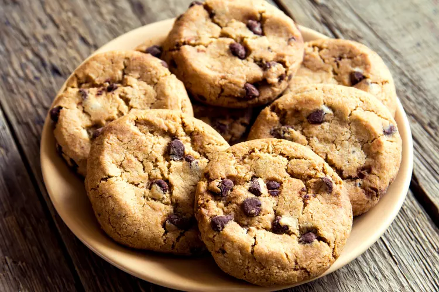

Chocolate Cookies

Recipe Description
Gooey, chocolatey, feel-good Cookies for you
to treat yourself to the goodness you deserve
This easy-to-follow and cheap is the only recipe
you'll need to know in order to make the best
cookies you or your friends will ever taste.
Ingredients
- ½ cup granulated sugar (100 g)
- ¾ cup brown sugar (165 g), packed
- 1 teaspoon salt
- ½ cup unsalted butter (115 g), melted
- 1 large egg
- 1 teaspoon vanilla extract
- 1 ¼ cups all-purpose flour (155 g)
- ½ teaspoon baking soda
- 4 oz milk or semi-sweet chocolate chunks (110 g)
- 4 oz dark chocolate chunk (110 g), or your preference
Steps
-
In a large bowl, whisk together the sugars, salt, and butter until a paste forms with no lumps.
-
Whisk in the egg and vanilla, beating until light ribbons fall off the whisk and remain for a short while before falling back into the mixture.
-
Sift in the flour and baking soda, then fold the mixture with a spatula (Be careful not to overmix, which would cause the gluten in the flour to toughen resulting in cakier cookies).
-
Fold in the chocolate chunks, then chill the dough for at least 30 minutes. For a more intense toffee-like flavor and deeper color, chill the dough overnight. The longer the dough rests, the more complex its flavor will be.
-
Preheat oven to 350°F (180°C). Line a baking sheet with parchment paper.
-
Scoop the dough with an ice-cream scoop onto a parchment paper-lined baking sheet, leaving at least 4 inches (10 cm) of space between cookies and 2 inches (5 cm) of space from the edges of the pan so that the cookies can spread evenly.
-
Bake for 12-15 minutes, until the edges have started to barely brown.
-
Cool completely before serving.
-
Enjoy!